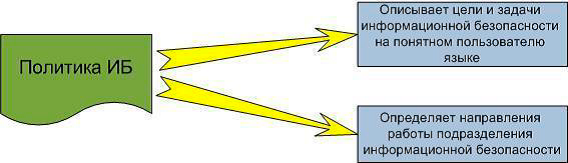

Лабораторная работа 8.
Разработка политики информационной безопасности
Цель работы
изучить структуру типовой политики информационной безопасности и научиться составлять частную политику информационной безопасности.
Теоретическая часть
Политика безопасности (информации в организации) (Organizational security policy) – это совокупность документированных правил, процедур, практических приемов или руководящих принципов в области безопасности информации, которыми руководствуется организация в своей деятельности.
В современной практике термин «политика безопасности» может употребляться как в широком, так и в узком смысле слова. В широком смысле политика безопасности определяется как система документированных управленческих решений по обеспечению безопасности организации. В узком смысле под политикой безопасности обычно понимают локальный нормативный документ, определяющий требования безопасности, систему мер, либо порядок действий, а также ответственность сотрудников организации и механизмы контроля для определенной области обеспечения безопасности.

Примерами таких документов могут служить:
• Правила работы пользователей в корпоративной сети;
• Политика обеспечения безопасности удаленного доступа к ресурсам корпоратив-ной сети;
• Политика обеспечения безопасности при взаимодействии с сетью Интернет;
• Антивирусная политика, инструкция по защите от компьютерных вирусов;
• Политика выбора и использования паролей;
• Правила предоставления доступа к ресурсам корпоративной сети;
• Политика установки обновлений программного обеспечения;
• Политика и регламент резервного копирования и восстановления данных;
• Соглашение о соблюдении режима информационной безопасности, заключаемое со сторонними организациями
Разработка политик безопасности собственными силами – длительный трудоемкий процесс, требующего высокого профессионализма, отличного знания нормативной ба-зы в области информационной безопасности. Поэтому решение вопроса о разработке эффективной политики информационной безопасности на современном предприятии обязательно связано с проблемой выбора критериев и показателей защищенности, а также эффективности корпоративной системы защиты информации. Вследствие этого, в дополнение к требованиям и рекомендациям стандартов, законам и иным руководя-щим документам приходится использовать ряд международных рекомендаций. В том числе адаптировать к отечественным условиям и применять на практике методики международных стандартов,
таких как: ISO 17799, ISO 9001, ISO 15408, BSI, COBIT, ITIL и другие, а
также использовать методики управления информационными рисками в совокупности с оценками экономической эффективности инвестиций в обеспечение защиты информации предприятия.
Основными нормативными документами в области информационной безопасности выступают:
«Общие критерии оценки безопасности информационных
технологий» (ISO 15408), которые определяют функциональные требования безопасности и требования адекватности реализации функций безопасности;
«Практические правила управления информационной безопасностью» (ISO 17799). Данный стандарт содержит систему практических правил по управлению ин-формационной безопасностью и используется в качестве критериев оценки эффективности механизмов безопасности на организационном уровне, включая административные, процедурные и физические меры защиты.
Для того, чтобы сформировать и определить политику информационной безопасности, понадобятся следующие исходные данные:
Необходимо определить информацию, которая подлежит защите, и создать перечень сведений конфиденциального характера, в соответствии с защищаемой информацией;
Определить топологии средств автоматизации (физической и логической);
Необходимо описать административную структуру и категории зарегистрированных пользователей, описать технологию обработки информации и выделить потенциальных субъектов и объектов доступа;
• Определить угрозы безопасности информации и создать модель нарушителя;
• Обнаружить и описать известные угроз и уязвимости;
• Расположить угрозы по убыванию уровня риска (провести анализ рисков).
Так же, необходимо описать общую характеристику и специализацию организации (наименование организации, специализация, род деятельности, решаемые задачи, характер и объем работ, расположение угроз по убыванию
уровня риска).
Необходимо описать организационно-штатную структуру организации (отделы и отделения организации, наименования отделов, решаемые задачи, общая технологическая схема функционирования подразделений). Так же составляется общее описание рабочего процесса, технологическая схема операций при выполнении рабочего процесса, интенсивность, с которой выполняется рабочий процесс, технологические ограничения, средства контроля и критерии качества результатов рабочего процесса, перечень
проблемных вопросов подразделений по обеспечению защиты информации.
Должны быть описаны так же следующие данные:
Используемые на предприятии средства вычислительной техники и
программное обеспечение;
Сведения об используемых СВТ (описание аппаратных средств,коммуникационного оборудования удаленного доступа);
Сведения об используемом общем ПО (наименование и назначение,
фирма разработчик, аппаратные требования, размещение);
Сведения об используемом специальном ПО (наименование и назначение, фирма разработчик, аппаратные требования, функциональные
возможности , размещение).
Организация и структура информационных потоков и их взаимодействие :
• Топология ЛВС;
• Схема коммуникационных связей;
Структура и состав потоков данных (перечень входных информационных объектов и их источники, перечень выходных информационных объектов и их получатели, перечень внутренних
информационных объектов);
Организация хранения данных.
Общая характеристика автоматизированных систем организации:
• Расположение ЛВС;
• Технические и программные средства ЛВС (физическая среда передачи, используемые протоколы, операционные системы, серверы баз данных, места хранения конфиденциальных данных, средства защиты информации);
• Технические и программные средства доступа к ЛВС из сетей общего доступа;
• Принадлежность и типы каналов связи;
• Сетевые протоколы удаленного доступа.
Ответственность и обязательства персонала
Эффективная информационная безопасность требует соответствующего участия персонала. Персонал ответственен за свои действия и, следовательно, отвечает за все события и последствия под своим идентификационным кодом пользователя (логин/пароль). Придерживаться политик и процедур доступа к сетям и системам – обязанность персонала.
Доступ к любым внешним Интернет-сервисам от имени компании, равно как и доступ с помощью посторонних ИТ ресурсов к бизнесу компании не копенсируется, не существует без обязательств, ответственности и согласия компании.
Ответственность персонала включает, но не ограничивается следующим:
считывать и передавать только данные, на которые у Вас есть авторизованные права и которые Вам положено знать, включая ошибочно
адресованную электронную почту;
сознательно придерживаться всех политик, законов и нормативных документов (локальных, федеральных, международных), касающихся
использованию компьютерных систем и программ;
сообщать о нарушениях информационной безопасности ответственным за безопасность сотрудникам, тесно сотрудничать в расследованиях злоупотреблений и неправомерных действий персонала с ИТ
ресурсами ;
защищать назначенные Вам имя и коды пользователя, пароли, другие ключи доступа от раскрытия;
оберегать и содержать конфиденциальную печатную информацию,
магнитные и электронные носители в предназначенных для этого местах, когда они не в работе и размещать их в соответствии с политикой компании;
использовать только приобретенное компанией и лицензионное про-граммное обеспечение, разрешенное для использования внутри
компании, устанавливать программы и сервисы только через сотрудника ИТ под-разделения;
выполнять все предписания и действия по информационной безопас-ности (например, по антивирусной защите, пользованию электронной почтой); не оставлять компьютер с включенным доступом в свое отсутствие -
ставить экран на пароль или выходить из системы;
не перегружать ресурсы компании (каналы и сервера) трафиком, за-пуском нескольких копий программ; сворачивать или закрывать
неиспользуемые программы на сервере;
периодически посещать тренинги и семинары, проводимые ИТ
подразделением компании.